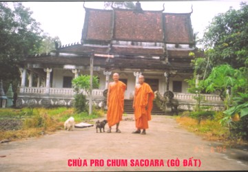

|
BuddhaSasana Home Page |
Vietnamese, with Unicode Times font |
Chùa
Gò Đất
Pro Chum Sacoara
Ấp Bình Thạnh,
Xã Minh Hòa, Huyện Châu Thành,
Kiên Giang, Việt Nam
|
 |
|
Source: Huyền Thanh (06-2006)
last updated: 01-07-2006